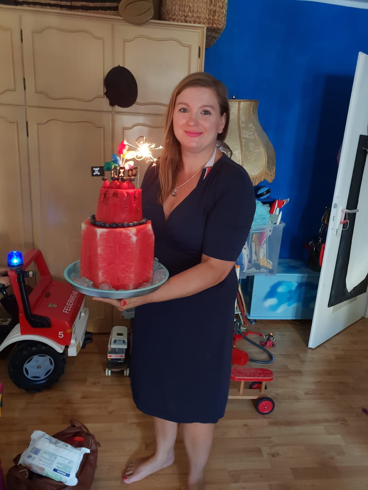
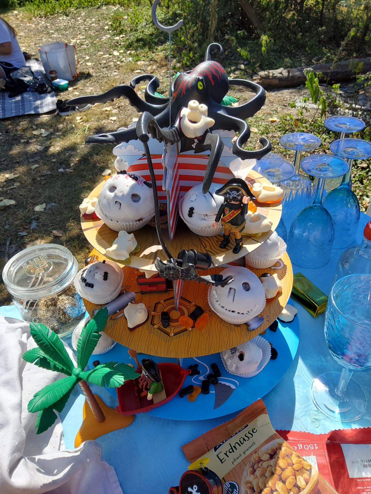

Deine Geburtstage waren jedes Jahr ein kleines Fest-Projekt. Wochen vorher haben wir geplant: Welches Motto? Welche Torte? Wer wird eingeladen? Ich habe nachts Torten verziert und Girlanden aufgehängt, und wenn du morgens hereinkamst, war dein Gesicht das schönste Geschenk – für mich.


Ein Kindergeburtstag ohne Kind ist etwas, das es nicht geben dürfte. Der Tag kommt trotzdem im Kalender. Die Erinnerung an all die Jahre kommt auch. Und die Frage, wie du diesen Tag verbringst – ob jemand dir eine Torte macht, ob jemand weiß, welche du am liebsten magst, ob dir jemand ein Ständchen singt, so schief und so laut, wie wir es immer gesungen haben.
Ich habe an deinem Tag eine Kerze angezündet. Nicht auf einer Torte – die backe ich, wenn du wieder da bist, und dann mit allem: Motto, Girlanden, Überraschung. Nachfeiern ist nicht abgesagt. Nachfeiern ist aufgeschoben.
Bis dahin, mein Schatz: Herzlichen Glückwunsch, wo immer du diesen Tag verbringst. Deine Mama denkt an dich. Jede Minute.